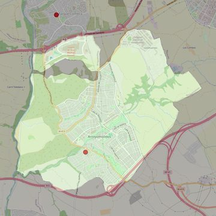

Asunción de Nuestra Señora
- Arciprestazgo
- Griñón
- Población
- Arroyomolinos
- Dirección postal
- c/ Batres, 1
- Código postal
- 28939
- Extensión
- 20,76 km² (2.076 ha)
- Teléfono
- 916 095 462
- Correo electrónico
- asunciondens-arroyomolinos@diocesisgetafe.es


Descargar mapaLímites según decreto
Los del término municipal